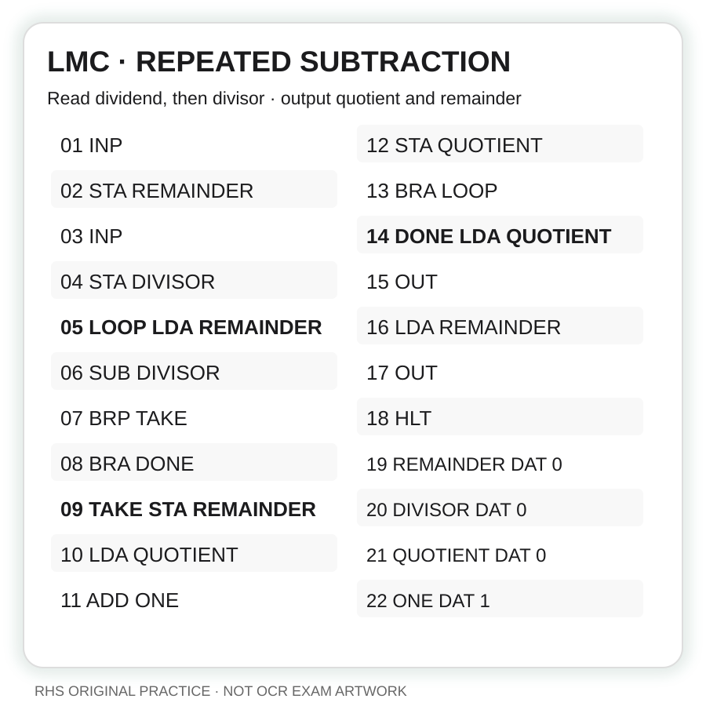
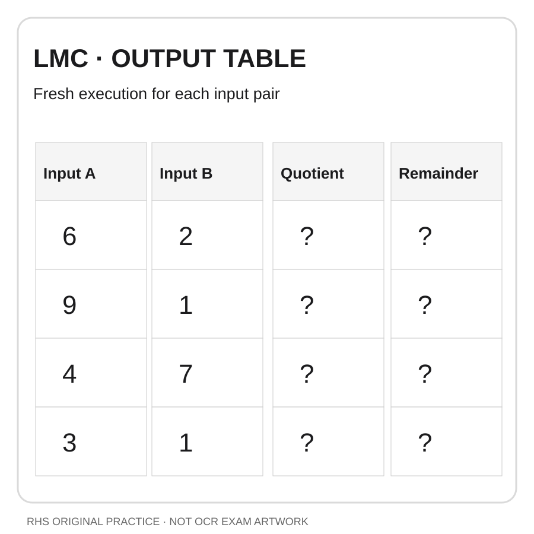
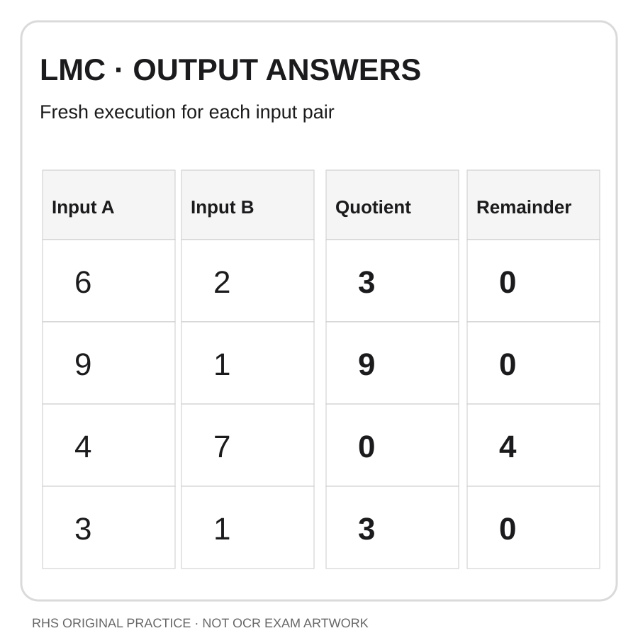

Q6(b) · 4 marks
Run the LMC routine with each fresh input pair (6,2), (9,1), (4,7), and (3,1). Record the two outputs for each run: quotient, then remainder.

Answer
(6,2) → (3,0); (9,1) → (9,0); (4,7) → (0,4); (3,1) → (3,0). One mark per complete pair.

Q6(c) · 4 marks
Translate the repeated-subtraction LMC routine into equivalent language-independent pseudocode, accepting a dividend and positive divisor and outputting quotient then remainder.
Answer
Read two inputs; initialise quotient and remainder; repeat subtraction while remainder ≥ divisor; output quotient and remainder. DIV/MOD alternative subject to teacher marking review.